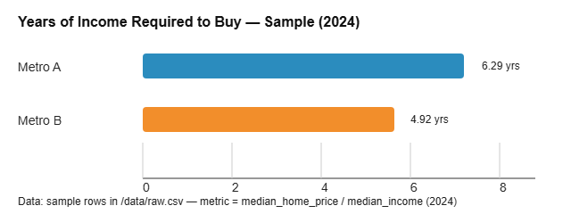
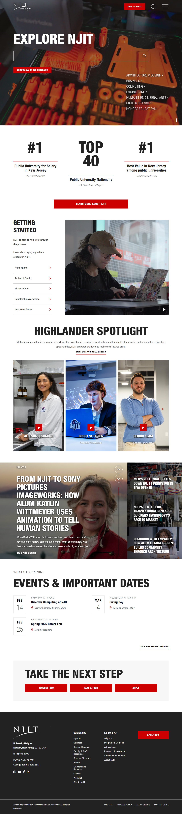
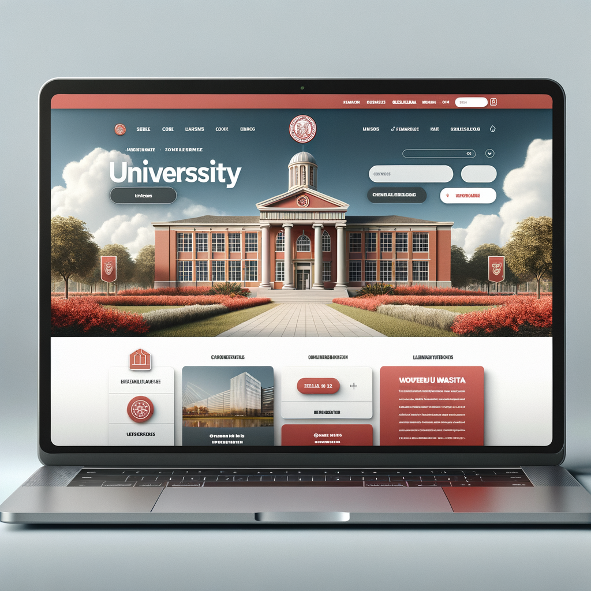

featured projects revised into professional case studies
Applied AI product engineering portfolio
Building useful AI tools that turn messy questions into working product decisions.
I am moving toward AI product engineering and forward-deployed applied AI work: scoping ambiguous problems, building small reliable systems, and explaining the tradeoffs clearly enough for teams to trust the result.
Audience
AI product and engineering reviewers
Signal
Builder + analyst + clear communicator
course design-system moves documented in the build plan
used intentionally for research, writing, and workflow critique
Focus: AI-assisted software, data storytelling, product judgment
Tools: TypeScript, React, Node.js, OpenAI API, MCP, D3, GitHub Pages
Proof: shipped demos, documented tradeoffs, explainable workflows
Featured proof
Projects that support the direction
These are presented as portfolio case studies rather than class artifacts. Each one shows a piece of the role I am aiming for: building useful systems, evaluating data, and making AI part of a serious workflow.

Revised midterm project
Graduate Housing Affordability Lab
An interactive data story asking whether recent graduates can afford a median-priced home within five years. I revised the project framing so it reads like a professional product case: clearer audience, sharper claim, stronger limits, and a more direct explanation of what the tool proves.
- Built with React, TypeScript, D3, Vite, and a documented data pipeline.
- Includes a chart view, affordability calculator, MCP tools, and a chatbot layer.
- Improved portfolio presentation around problem, action, result, and next steps.

Job technology project
CLI AI Toolkit
A TypeScript command-line toolkit for AI-powered work. The project demonstrates the kind of engineering foundation expected in applied AI roles: clean command boundaries, environment configuration, OpenAI API integration, and room to add new tools without rewriting the system.
- Uses a command registry, shared base command, and strict TypeScript interfaces.
- Handles API configuration through environment variables and clear setup docs.
- Shows how AI can become a reusable developer workflow, not a one-off prompt.
Professional direction
Applied AI product engineer
The roles I researched are hybrid: part software engineer, part product thinker, part technical translator. They focus on shipping AI systems that work in real constraints: messy data, cost limits, latency, safety, and uncertain user needs.
My believable next step is to keep building small AI-enabled tools where the value is visible: data interfaces, internal workflow assistants, research agents, and product prototypes that can be tested instead of only described.
Build
React interfaces, TypeScript modules, Node services, API-backed tools.
Ground
Use real data, documented assumptions, retrieval, and evaluation notes.
Explain
Turn technical work into claims, proof, limits, and next decisions.
Improve
Use AI to critique drafts, compare options, and make revisions traceable.
Course framework
How the design-system Tour shaped the site
-
1
Audience
One reviewer: a product or engineering lead looking for evidence of AI-ready building.
-
2
Vibe
Sage plus creator: thoughtful, system-minded, practical, and still student-believable.
-
3
Look
Quiet systems dashboard: strong hierarchy, dark text, green-blue accents, real screenshots.
-
4
Proof
The two major class projects appear before the skills list so the claims have evidence.
-
5
Build
A single-page structure supports the five-minute presentation: signal, work, direction, process, links.
-
6
Publish
Static files and README links make the portfolio easy to host from GitHub Pages.
AI workflow
Using AI with judgment
AI was used to research role expectations, pressure-test portfolio positioning, rewrite project descriptions, and identify what proof should appear near the main claim. I kept final decisions focused on what I can explain in the presentation: the audience, the projects, the limits, and the next skills to develop.

Contact and links